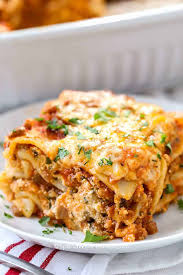

Lasagna

Description
Lasagna (UK: /ləˈzænjə/,[1] US: /ləˈzɑːnjə/; Italian: [laˈzaɲɲa]), also known as lasagne (Italian: [laˈzaɲɲe]),
is a type of pasta, possibly one of the oldest types,
[2] made in very wide, flat sheets. In Italian cuisine it is made of stacked layers of pasta alternating with fillings such as ragù (ground meats and tomato sauce),
béchamel sauce, vegetables, cheeses (which may include ricotta, mozzarella, and Parmesan), and seasonings and spices.[3] The dish may be topped with grated cheese,
which melts during baking. Typically cooked pasta is assembled with the other ingredients and then baked in an oven (al forno). The resulting baked pasta is cut into single-serving square or rectangular portions.
Ingredients
To make lasagna you need :
Bolognese sauce
- ground meat
- Carrots
- Celery
- Tomatoes
- Onions
Bachamel Sauce
Cheese (Alot yummy)
Pasta Sheets
Step by step Instructions
- Start By making the sauce
With ground beef, bell peppers, onions, and a combo of tomato sauce,
tomato paste, and crushed tomatoes. The three kinds of tomatoes gives
the sauce great depth of flavor.
- Let this simmer while you boil the noodles and get the cheeses ready.
We're using ricotta, shredded mozzarella, and parmesan -- like the mix of tomatoes, this 3-cheese blend gives the lasagna great flavor!
-
From there, it's just an assembly job.
A cup of meat sauce, a layer of noodles, more sauce, followed by a layer of cheese. Repeat until you have three layers and have used up all the ingredients.
-
Bake until bubbly and you're ready to eat!